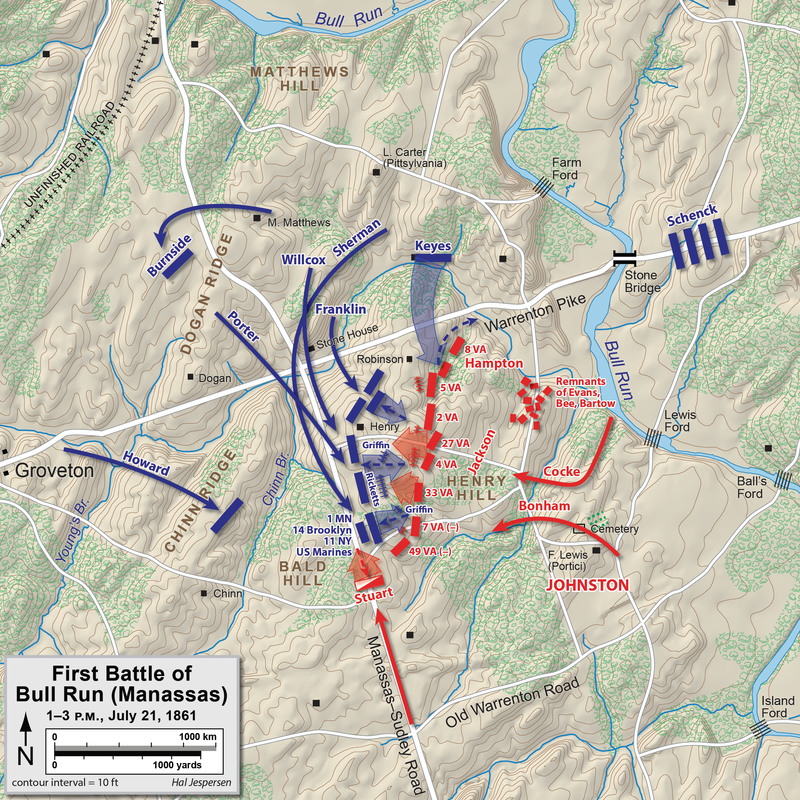
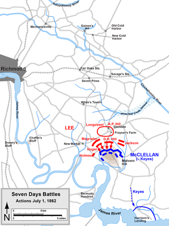
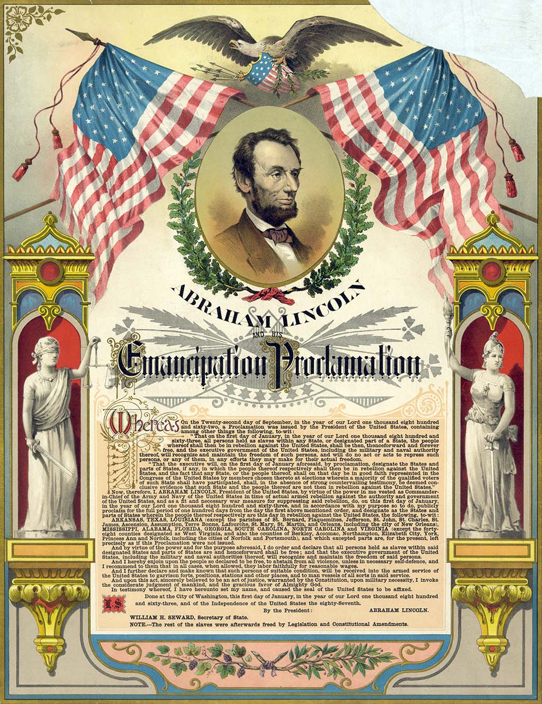

After the bombardement and subsequent fall of Fort Sumter, the civil war was declared. Although the Confederacy was greatly outnumbered, they managed to hold their own against the Union in multiple pitched battles.
Explore the battlefield!
The First Battle of Bull Run occurred on July 21st, 1861 when Brigadier General Irvin McDowell attempted to capture a strategic railroad junction at Manassas. The Confederates under Brigadier General P.G.T Beauregard were heavily outnumbered with only 22,000 men to McDowell's 35,000. Although Beauregard was outnumbered he knew he was to receive reinforcements from Brigadier General Joseph Johnston's Army of the Shenandoah. With this knowledge, Beauregard prepared to defend Manassas from McDowell starting the first major battle of the war.
Both armies were highly untrained, and for many of the soldiers on both sides, this was their very first battle. This caused large amounts of issues in the organization of the army, causing delays in McDowell's plans. Despite this, the Union managed to quickly drive the rebels from Matthew's Hill. Due to more delays, the Confederacy was able to reform on Henry hill where most of the battle will take place.
The defense of Henry Hill
In order to drive Beauregard from the field. Union batteries are set up and an assault is planned, while on the other side, Thomas Jackson prepares a defense of the hill. When the Union assault finally comes in the afternoon, the Confederates under Jackson hold firm giving him the nickname "Stonewall Jackson". The nickname was well earned as his defense allowed time for Johnston's reinforcements to arrive and defeat the Union in the first major battle of the war. Many civilians watched the battle expecting a major Union victory only to be stunned by the Confederate victory, proving that this war was not going to be a short one.
Explore the battlefield!
After the Union defeat at Bull Run, McDowell was replaced by Major General George B. McClellan. A cautious man, McClellan spent a large amount of time reorganizing the army as the new "Army of the Potomac", adopting the corps system from Europe. Numbering 121,000 men, the army was sent to capture the Confederate capital. As the Union army moved towards Richmond it faced serious delays to due McClellan's cautiousness, as he was always worried of an attack. Despite this, his overwhelming advantage in numbers allowed him to beat the Confederacy back to Richmond in a skirmish the Confederate commander, Johnston was injured. This led to him being replaced by Robert E. Lee, one of the most famous generals of the war.
Once, Lee took command he spent a month reorganizing his army into the "Army of Northern Virginia", during this time the Union, still too timid to advance on Richmond, stayed put. Lee used this time to prepare a campaign to push the Union out of Virginia. Lee began to constantly attack the Union army, in the battles of Oak Grove, Mechanicsville, Gaines Mill, White oak. McClellan, who already believed he was outnumbered, was frightened by the speed of the Confederate army, constantly retreating till he made plans for a stand at Malvern Hill in order to buy time to retreat back to Washington D.C.
The Battle of Malvern Hill
As the Army of the Potomac prepared for a withdrawel, the V corps under Brigadier General Fitz John Porter prepared for a potential attack from Confederate forces, this preparation ended up bearing fruit as on July 1st, 1862, Lee attacked the Union position at Malvern Hill. Despite constant Confederate victories in the past 7 days, Malvern Hill was a highly advantageous position for the Union. With Porter's preperations, the Union position was able to consistantly hold off Confederate frontal charges, inflicting heavy casualties. Despite being able to hold Malvern Hill and beat the Confederates back Porter was ordered to retreat with the rest of the army due to fears of the Confederates outnumbering the Union despite many intelligence reports stating otherwise. This resulted in another Confederate victory, the Union retreating to Washington and McClellan being replaced.
Explore the battlefield!
In the summer of 1862, the Confederacy had just won multiple major victories against the Union. With morale at an all time high, the Army of Northern Virginia under Lee moves to invade Maryland and threaten the Union in Pennsylvania. This forced the Union army, now again commanded by McClellan after his replacement was demoted, to move against Lee. After skirmishs and manuevering by both sides, the Confederates prepare to make their stand at the city of Sharpsburg, starting the battle of Antietam.
The Battle of Antietam
By Map by Hal Jespersen, www.posix.com/CW, CC BY 3.0, https://commons.wikimedia.org/w/index.php?curid=1952347
On September 16th 1861, the Union 1st corps under Hooker began advancing on the Confederate left flank around Dunker's Church. This section of the battle continued to be a bloody stalemate with troops on both sides constantly reinforcing the position. Eventually Union numbers caused the Confederates to retreat to a new position, now known as "Bloody Lane". Here, around 6000 men died in the fight for this position, but again Union numbers caused the Confederate to again retreat. After the battle died down around Bloody Lane, the Union IX corps attempted to cross a bridge to attack the Confederates from behind, only to be repulsed and the IX corps would lose 20% of its fighting strength. Eventually the Union managed to push the Confederates form their positions, but they did not attack due to McClellan's fears, allowing Lee to retreat back to Virginia, ending the battle.
The Emancipation Proclamation
Published by Strobridge Lith. Co., Courtesy Library of Congress (97507511)
The Battle of Antietam was and still is the bloodiest day in American history, with more Americans soldiers dying on September 17th 1862 than in any other war in American history. Although costly, the Union finnally had a victory against the Confederacy in the Eastern Theatre of the war. Emboldened by victory, Abraham Lincoln issues the "Emancipation Proclamation", ending slavery in the USA. This prevented any prospect of European Intervention as no nation wanted to support slavery, while also providing millions of people throughout the United States freedom from slavery. This continues to be one of the most important days in American history.